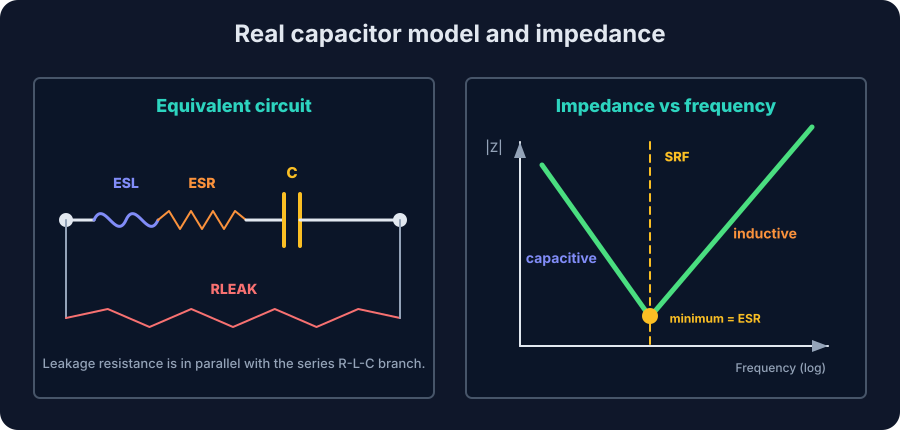
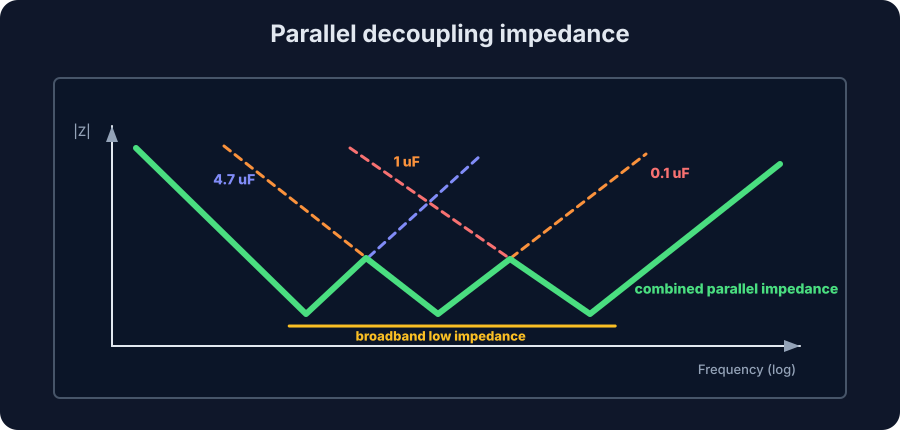
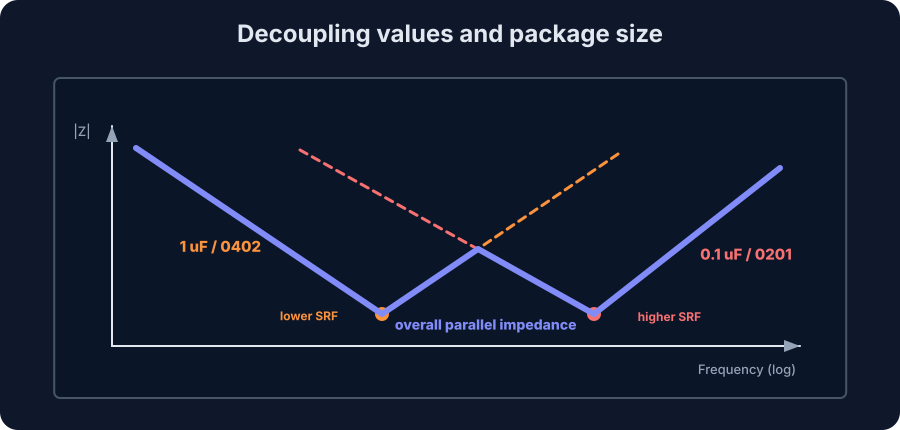
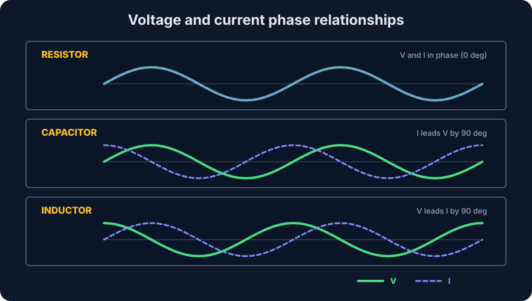
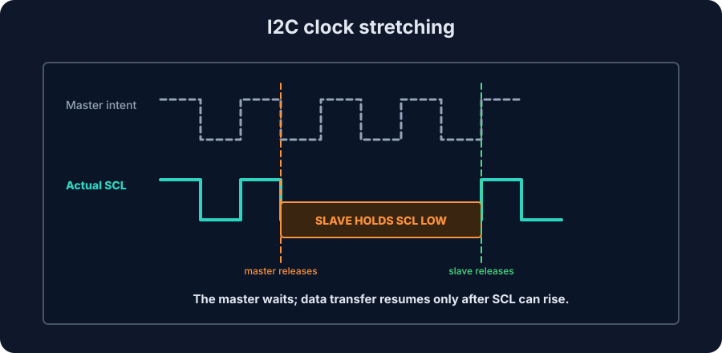
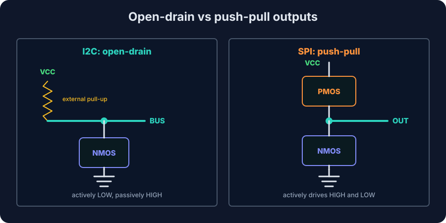
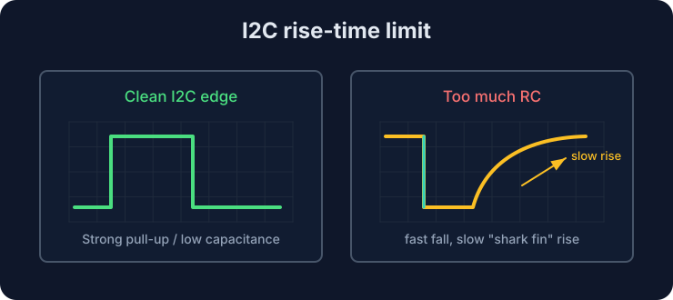

passives-capacitors-draw-the-realistic-circuit-model-parasitics-of-a-c / image_1
Real capacitor model and impedance capacitor_real_model_srf

Prompt
Left: A circuit model showing an ideal capacitor (C) in series with an ESR resistor and ESL inductor, with a large R_leak resistor in parallel. Right: A V-shaped graph of Impedance vs. Frequency, dipping to a minimum at the SRF.
passives-capacitors-why-use-multiple-different-values-of-decoupling-ca / image_1
Parallel decoupling impedance decoupling_parallel_impedance

Prompt
A graph of Impedance vs. Frequency showing multiple V-shaped SRF curves overlapping. The combined impedance forms a wider, flatter "U" shape at the bottom, labeled "Broadband Low Impedance".
passives-capacitors-when-building-a-decoupling-network-why-do-we-use-c / image_1
Decoupling values and package size decoupling_decade_packages

Prompt
A graph of Impedance vs Frequency. There are two V-shaped dashed lines: one labeled '1µF 0402' with its SRF dip at a lower frequency, and one labeled '0.1µF 0201' with its SRF dip at a higher frequency. The lines intersect in the middle. A thick, bold blue line traces the lowest outline of both curves combined, labeled 'Overall Parallel Impedance'.
passives-fundamentals-how-do-voltage-and-current-relate-to-each-other / image_1
Voltage and current phase relationships passive_phase_relationships

Prompt
Three stacked graphs of sine waves. Top (Resistor): V and I sine waves perfectly overlapping. Middle (Capacitor): The I sine wave is shifted to the left (leading) the V sine wave by 90 degrees. Bottom (Inductor): The V sine wave is shifted to the left (leading) the I sine wave by 90 degrees.
protocols-i2c-what-is-i2c-clock-stretching-and-why-is-it-used / image_1
I2C clock stretching i2c_clock_stretching

Prompt
A timing diagram showing the Master releasing the SCL line, but the SCL line remaining LOW because the Slave is holding it down (labeled "Clock Stretching"). The Master pauses data transmission until the Slave releases SCL.
protocols-system-architecture-why-does-i2c-require-pull-up-resistors-w / image_1
Open-drain vs push-pull outputs open_drain_push_pull

Prompt
Side-by-side schematics. Left (Open-Drain): A single N-channel MOSFET connected to ground, with an external pull-up resistor to Vcc. Right (Push-Pull): A complementary pair of MOSFETs (PMOS on top connected to Vcc, NMOS on bottom connected to ground) actively driving the output line.
protocols-system-architecture-what-causes-shark-fin-waveforms-on-the-r / image_1
I2C rise-time limit waveform_comparison

Prompt
An oscilloscope waveform comparison. Left: Clean square I2C pulse with sharp rising and falling edges. Right: "Shark fin" waveform where the falling edge is steep, but the rising edge is a slow, curved RC ramp.